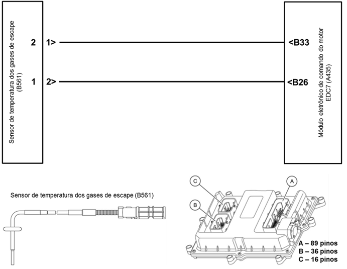

|

Descrição da Falha
Sinal de
temperatura dos gases de escape após o turbo, sem sinal.
Indicação de Falha
Luz de alerta acende constantemente
em vermelho com símbolo  e ativa o alarme sonoro
curto, com o veículo andando ou parado. e ativa o alarme sonoro
curto, com o veículo andando ou parado.
A LIM permanece ligada.
Estratégia de Monitoramento
O módulo EDC7 monitora os limites
de tensão do sensor de temperatura assim como o bloqueio AD
(analógico-digital).
Efeito da Falha
Limitação da rotação do motor para
2000 rpm.
Limitação do torque do motor.
Possíveis Falhas
FMI 4: Sem sinal.
FMI 5: Curto ao massa.
FMI 10: Circuíto interrompido
Aviso
  Não há
aviso específico para esse código. Não há
aviso específico para esse código.
Registros de Falhas em Outros
Módulos de Comando
Não.
Considerar os esquemas
elétricos do veículo
| Verificação
|
Medição |
Eliminação da
Falha |
|
Resistência do sensor de temperatura
|
Utilize o
Tester
Box e consulte o manual Verificação EDC7 C32:
- Medir a resistência entre os pinos B33
e B26
Valor nominal:
200 - 700 Ω
|
– Verificar os cabos
quanto a rompimento ou oxidação
– Verificar as
conexões quanto a mau contato ou pinos tortos
- Substituir o sensor de temperatura
|
|
Resistência do sensor de temperatura
lado massa
|
Utilize o
Tester
Box e consulte o manual Verificação EDC7 C32:
- Medir a resistência entre os pinos B26
e A03
Valor nominal:
maior que 10 MΩ
|
|
Tensão do sensor de temperatura
|
Utilize o
Tester
Box e consulte o manual Verificação EDC7 C32:
- Medir a tensão entre os pinos B33
e B26
Valor nominal:
1,08 - 2,30 V para temperatura entre 20 e
700ºC
|
Temperatura
em ºC
|
0
|
25
|
200
|
400
|
600
|
800
|
| Resistência
em Ω |
200
|
220
|
352
|
494
|
627
|
751
|
Tester Box

|